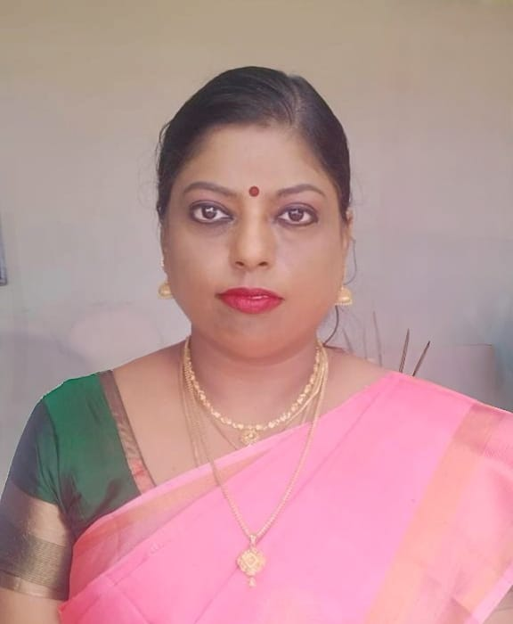

Associate Dean (Science) · Head-in-Charge · Assistant Professor
Department of Computer Science
Anna Adarsh College for Women (Autonomous) — NAAC A++

Dr. M. Anita Priscilla Mary is a distinguished academic with over seventeen years of teaching and research experience in Computer Science. Currently serving as Associate Dean (Science), Head-in-Charge, and Assistant Professor at Anna Adarsh College for Women (Autonomous), Chennai — an institution re-accredited by NAAC with an A++ Grade — she exemplifies academic leadership grounded in scholarly rigour.
Her research spans machine learning, data mining, and electrical energy forecasting. She has authored peer-reviewed publications in Scopus and Springer-indexed outlets, presented at international conferences, and secured a Government of India patent for an IoT-based health monitoring innovation.
Beyond scholarship, Dr. Anita Priscilla Mary brings a rare depth of institutional commitment — guiding curriculum development, mentoring students, and contributing to the governance of her department and college as both an administrative and academic leader.
Doctor of Philosophy in Computer Science, Dr. MGR Educational and Research Institute, 2022
Appointed Associate Dean (Science), Anna Adarsh College for Women (Autonomous), effective November 2025
Elevated to Head-in-Charge, Dept. of Computer Science (Shift II), effective May 2026
Patent granted for Smart Measurable Temperature Monitoring Device with Social Distance, January 2021
Chapter published in Springer's Intelligent Computing series, garnering 9 scholarly citations
Successfully cleared the State-Level Eligibility Test (SLET) through Mother Teresa University, 2018
Coordinates academic governance across all science departments, liaising with the Principal and Heads of Departments to uphold institutional standards of excellence. Works in alignment with the Dean (Science) while maintaining impartial institutional oversight.
Oversees all departmental operations including academic scheduling, faculty coordination, student welfare, and compliance with institutional and university mandates for the Computer Science Shift II wing.
For academic collaborations, research partnerships, faculty enquiries, or institutional outreach, please reach out through any of the channels below or via the contact form.